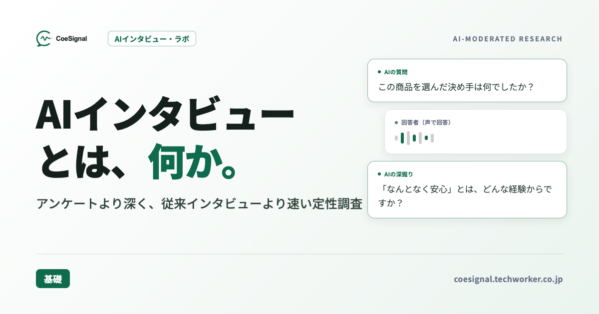
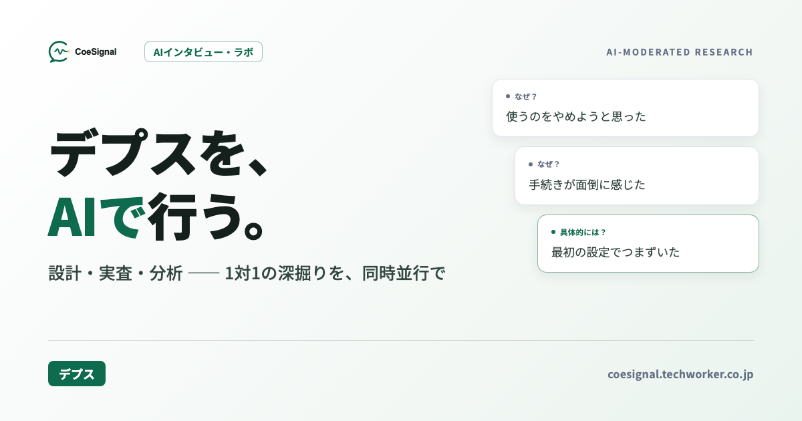
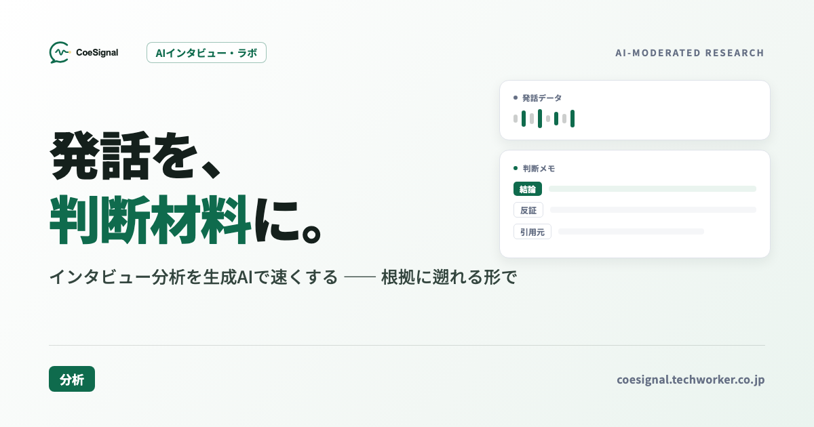
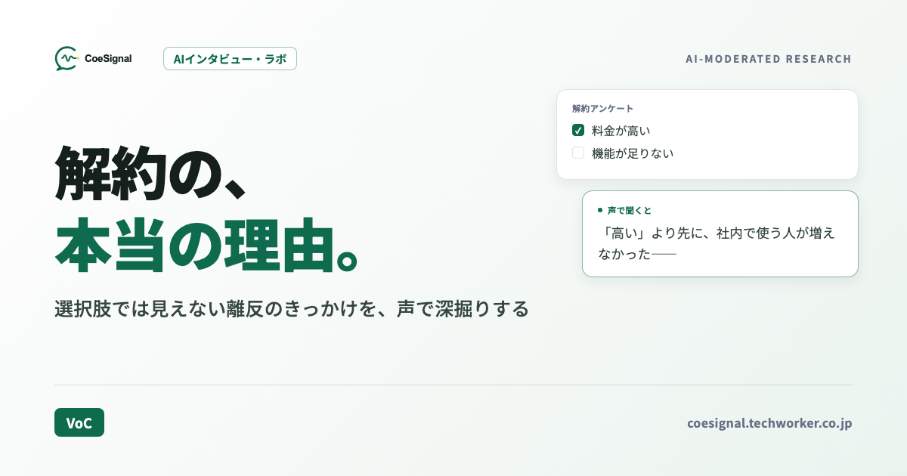

AI-Moderated Research Lab
AIインタビュー・ラボ
「なぜ」をAIインタビューで聞き、意思決定に変える——事業会社の商品企画・マーケティング・リサーチ・CX担当のための定性調査の実践メディアです。
特集
記事一覧

基礎2026.07.23 AIインタビューとは｜アンケートより深く、従来インタビューより速い定性調査 仕組み・アンケートや従来インタビューとの違い・使いどころと限界を、実装の知見から解説。
デプス2026.07.23 デプスインタビューをAIで行う｜設計・実査・分析の実務 1対1で深く聞く調査をAIで並行実施する。設計から分析までの進め方。
分析2026.07.23 インタビュー分析を生成AIで速くする｜発話データを判断材料に変える 発話を構造化し、示唆と根拠（引用元）を結びつける生成AI分析の実務。
VoC2026.07.23 解約理由・VoCをAIインタビューで深掘りする｜数字では見えない離反の理由 スコアの裏にある本当の離反理由を、一人ずつの発話から特定する。扱うテーマ
01
調査設計
目的から問いを設計する。誰に・何を・どこまで深く聞くかを決める、定性調査の出発点。
02
実査（AIモデレート）
回答者はURLを開き、画面の質問に声で答える。AIが回答を読み取り、必要なところだけ聞き返して深掘りする。
03
発話の分析
集まった発話データを構造化し、示唆と根拠（引用元）を結びつける。生成AIで分析を速く、抜け漏れなく。
04
意思決定への接続
結論・反証・次に確かめることを、根拠に遡れる形でまとめる。「聞いて終わり」にしない締め方。
「なぜ」を、
意思決定の根拠に。
「AIインタビュー・ラボ」は、企業のAI導入・活用を支援する株式会社TechWorkerが運営する、AIインタビュー（AIモデレートによる定性調査）の実践メディアです。AIインタビュープラットフォーム「CoeSignal」の開発・提供で得た実務知と、上場企業を含む37社・2,500名のAI支援で得た知見をもとに発信しています。
AIインタビューは、熟練モデレーターや対面の調査を置き換える魔法ではありません。アンケートでは拾えない「なぜ」を、一人ずつ・速く・深く聞き、根拠に遡れる形で判断につなげるための道具です。本メディアでは、その使いどころと限界を誠実に扱います。
CoeSignal 公式サイト →